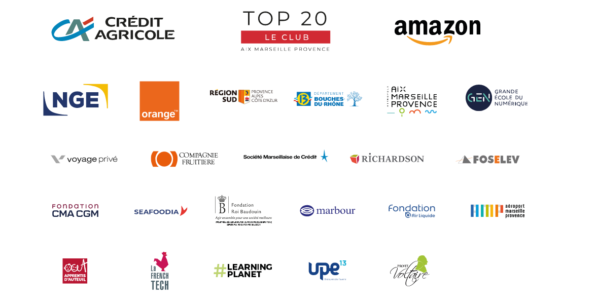

Qui sommes-nous ?
La Plateforme_ est une école du numérique et des nouvelles technologies co-fondée avec le Club Top 20 réunissant les grandes entreprises de la Métropole Aix Marseille. Elle comprend une offre de formations diversifiées destinées à former des codeurs et développeurs web, des experts en sécurité, des ingénieurs spécialisés en Intelligence Artificielle, et des cadres d’entreprises au travers de cycles de formations continues.
La Plateforme_ est membre du programme Grande Ecole du Numérique. Elle est soutenue par de grandes entreprises du territoire comme le Crédit Agricole Alpes Provence, par la Région Sud, le Département des Bouches du Rhône et la Métropole Aix Marseille Provence.
Nos partenaires
Nos certifications
La Plateforme Marseille a obtenu la certification qualité depuis le 18 septembre 2020 au titre de la catégorie des actions de formation.
La Plateforme Formation a obtenu la certification qualité depuis le 23 mai 2022 au titre des catégories des actions de formation, bilans de compétences, actions de formation par apprentissage.

La Plateforme_ est membre de l’April, soutient et contribue à des projets Open Source.
L’April est une association pionnière du logiciel libre en France. Elle démocratise la diffusion du logiciel libre et des standards ouverts auprès du grand public, des professionnels et des institutions.

La Plateforme_ est membre de l’AFCDP.
L’AFCDP est L’Association Française des Correspondants à la protection des Données à caractère Personnel. Elle regroupe les Délégués à la protection des données (DPO) et tous les professionnels de la conformité, RGPD, CNIL.

La formation est accessible aux personnes handicapées. L’école est équipée d’un ascenseur pour accéder aux étages. Une place de parking est prévue à proximité l’école.

Présentation
Cyril Zimmermann
Fondateur de La Plateforme_
Denis Philipon
Président du Top20
Serge Magdeleine
Directeur Général du Crédit Agricole Alpes-Provence